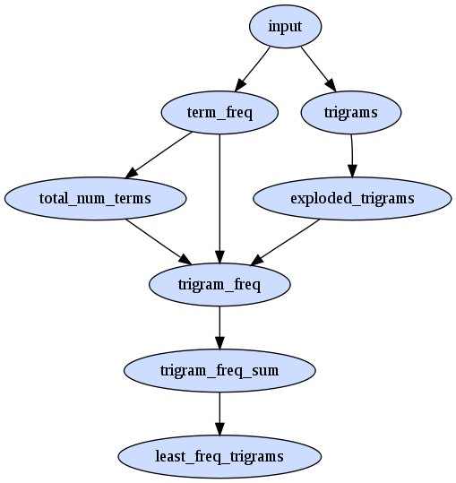

<< take 1: trigram frequency index take 3: markov chains >>
sips are about more than just the sequence of words, they should also take into account how often those words appear. how can we make use of a term's global frequency in the calculation?
firstly building a term freq table is trivial
#!/usr/bin/env ruby
STDIN.each do |line|
line.strip.split.each do |term|
puts "LongValueSum:#{term}\t1"
end
end
there are 430,000 occurences of terms in our corpus consisting of 27,000 unique terms
| term frequency histogram | |||
| freq of freq (*) | term freq (*) | examples | |
| 1 | 21,000 | the | |
| 1 | 11,500 | and | |
| ... | ... | ... | |
| 350 | 10 | admired, generous, stars | |
| ... | ... | ... | |
| 2,500 | 3 | customers, sagacity, writhing | |
| 4,600 | 2 | alternate, lashed, piebald | |
| 11,600 | 1 | enfokusigxas, gloved, succor | |
let's make up a new measure of how frequent a trigram is expected based on the frequency of it's terms
we'll call this the trigrams sip_mle for the sip's maximum likelihood estimate
sip_mle('a b c') = p(a) * p(b) * p(c)
note: this straight away is ignoring the order of the terms; eg p('a b c') = p('c b a'); but it's a start
we can then say the sips of a document are the trigrams with the lowest probabilities.
an example; consider three trigrams from our corpus ...
daddy alfred interrupted as that even from which the
and the frequencies of the terms in those trigrams ...
| term | freq | global freq |
| alfred | 200 | 0.00046 |
| as | 3,000 | 0.0069 |
| daddy | 10 | 0.000023 |
| even | 350 | 0.00081 |
| from | 1,400 | 0.0032 |
| interrupted | 20 | 0.000046 |
| that | 4,300 | 0.01 |
| the | 21,000 | 0.048 |
| which | 1,300 | 0.003 |
which trigram is the least probable according to sip_mle?
sip_mle('daddy alfred interrupted')
= p(daddy) * p(alfred) * p(interrupted)
= 0.000023 * 0.00046 * 0.000046
= 0.00000000000048668
straight away we see a classic problem with small probabilities on computers, numerical underflow
luckily, as previously discussed in another experiment, logarithms are our saviour.
a * b = e ^ (ln(a) + ln(b)) so we can rewrite as
sip_mle('daddy alfred interrupted')
= p(daddy) * p(alfred) * p(interrupted)
= e ^ ( log(p(daddy)) + log(p(alfred)) + log(p(interrupted)) )
= e ^ ( -10.66 - 7.67 - 9.97 )
= e ^ -41.03
and similiarly
sip_mle('as that even') = e ^ (-4.96 - 4.60 - 7.11) = e ^ -29.4
sip_mle('from which the') = e ^ (-5.72 - 5.80 - 3.01) = e ^ -25.88
now since: if a < b then log(a) < log(b) x is minimised when log(x) is minimised we can say that 'daddy alfred interrupted' has the lowest probability since it's got the most negative exponent, -41.03.
lets try to run it against a larger amount of data...
luckily the last example of using hadoop was super simple and finding the sip_mle of a trigram will be equally super simple yeah? yeahhhhhhh. no.
consider how we calculate sip_mle in a non map-reduce environment.
if we have a trigram: tri = 'a b c'
and the component frequencies: freq = {'a' => 5, 'b' => 4, 'c' =>3 }
we can calculate the mle freq with: mle_freq = tri.split.collect{ |v| freq[v] }.sum
the problem for hadoop lies in the calls to freq[v]. in a standard application we could hold the frequency hash in memory (if it was small enough) or on disk if it was too large for ram. but in the land of hugely massive datasets neither of these might be feasible; we need to use a streaming approach.
instead we need to do a join like operation in the reduce phase
we run a map pass emitting each trigram keyed three times, once for each of it's components. we then run a reduce pass across this set and the frequencies, which is also keyed by the components.
by careful use of key/value ordering we can have a reduce phase that will receive a frequency followed by the trigrams that use that frequency.
our special ordering is to emit frequencies including a composite key include a 0p to indicate the primary key.
a.0p 5 b.0p 4 c.0p 3
... and emit trigram keys using a composite key of 1f denoting a foreign key
a.1f a b c b.1f a b c c.1f a b c
reducing on both the frequencies and these exploded trigrams puts the frequencies just before any trigram that uses it since the composite key for the primary uses a 0 token
a.0p 5 a.1f a b c b.0p 4 b.1f a b c c.0p 3 c.1f a b c
now during the reduce if we see a primary key we can record the frequency in memory so we can emit it when we see the following corresponding trigram records. this results in the join data.
a b c 5 a b c 4 a b c 3and finally use a sum aggregator.
a b c 12
the use of 'f' and 't' in the keys is a bit hacky and if using the 'proper' hadoop there are better ways to represent this by careful selection of a key's hash and compareTo. see the mapreduce algorithms tutorial by cloudera for more info
we start with
bash> zcat input.simple/d1.txt.gz a b b c d e a c d e f bash> zcat input.simple/d2.txt.gz b c e e f b b c d f
firstly we need to augment all the lines of each file with the filename itself. this is required since each line of input as far as mapreduce is concerned is independent and we want to keep try of what line a file came from ourselves.
bash> rake prepare_files input=input.simple bash> zcat hadoop_input/d1.txt.gz d1 a b b c d e d1 a c d e f bash> zcat hadoop_input/d2.txt.gz d2 b c e e f d2 b b c d f
we upload to hadoop hdfs (hadoop distributed file system) with
bash> rake upload_input
the first map reduce pass is to calculate term frequencies
bash> rake term_frequencies bash> rake cat dir=term_frequencies a f 2 b f 5 c f 4 d f 3 e f 4 f f 3 (6 lines)
another pass over the term frequencies to get the total number of terms
bash> rake total_num_terms bash> rake cat dir=total_num_terms T 21 (1 lines)
another pass to calculate all unique document trigrams (note 'c d e' is only emitted once for doc1)
bash> rake trigrams bash> rake cat dir=trigrams d1 a b b 1 d1 a c d 1 d1 b b c 1 ... d2 c d f 1 d2 c e e 1 d2 e e f 1 (12 lines)
next we make another pass over the list of trigrams emitting the trigram once for each of it's tokens
bash> rake exploded_trigrams bash> rake cat dir=exploded_trigrams a t d1 a b b b t d1 a b b b t d1 a b b ... e t d2 e e f e t d2 e e f f t d2 e e f (36 lines)
now we are ready for the join operation across the term_frequencies (maximum likelihood estimate) and the exploded_trigrams to evaluate the frequencies per trigram component. (note: we have done the conversion to log(freq) in this step).
bash> rake trigram_mle_frequencies bash> rake cat dir=trigram_mle_frequencies d1 a b b -2.3513 d1 a c d -2.3513 d1 a b b -1.4350 ... d1 d e f -1.9459 d2 c d f -1.9459 d2 e e f -1.9459 (36 lines)
finally we sum the for each trigram and pluck out the least frequent trigrams per document
bash> rake trigram_frequency_sum bash> rake cat dir=trigram_frequency_sum d1 a b b -5.2215 d1 a c d -5.9555 d1 b b c -4.5283 ... d2 c d f -5.5500 d2 c e e -4.9746 d2 e e f -5.2623 (12 lines) bash> rake least_frequent_trigrams bash> rake cat dir=least_frequent_trigrams d1 -5.9555 a c d d2 -5.5500 c d f (2 lines)
hoorah!
here is the map reduce task dependency graph 
how about running it against our original 8 texts? there are quite a few sips and they are all instances of 3 hapax legomenon in a row.
7hmvg10 Home Vegetable Gardening (1911) has 5 sips. including gregg mccormick munger and ccormick munger cumberland, from ...
RASPBERRY VARIETIES Of the blackcaps, Gregg, McCormick, Munger, Cumberland, Columbian,(these two overlap and could be considered a single super sip!) another is rathburn snyder erie from ...
BLACKBERRY VARIETIES As with the other small fruits, so many varieties are being introduced that it is difficult to give a list of the best for home use. Any selections from the following, however, will prove satisfactory, as they are tried-and-true:--Early King, Early Harvest, Wilson Junior, Kittatinny, Rathburn, Snyder, Erie.
7stir10 The Journal of Arthur Stirling (1903) has 4 including browns elite tonsorial from...
edition!--And it was at seventy-two and the market--Cab! Cab!--Try Jones's Little Five-cent Cigars!--Brown's Elite Tonsorial and Shaving Parlors!--Have you seen Lucy Legs in the High Kicker? The Daily Hullabalooand peerless cocktails levys from...
elegant--Use Tompkins's Tooth Powder! _Use Tompkins's Tooth Powder!!_ USE TOMPKINS'S--Read the Evening Slop-Bucket! We rake all the mud-gutters!--Murphy's Wines and Liquors--Try Peerless Cocktails--Levy's High-Class Clothing Emporium!--Come in and buy something--anything--we get down on our knees--we beg you!--Cab, sir? Cab!--Bargains! Bargains!--Cash!
8prmt10 Prometheus (1772 in german) and esper10 A Complete Grammar of Esperanto are both full of them, 19 and 44 respectively, but they are in another language so no surprise...
8sknn10 The Story Of Kennett (1866) has one pouch flint tinder from...
rummaging in a deep pocket, she produced, one after the other, a short black pipe, an eel-skin tobacco-pouch, flint, tinder, and a clumsy knife. With a dexterity which could only have come from long habit, she
dwqoh10 Widger's Quotations from the Works of Oliver W. Holmes, Sr. has 4, all in french, though the bulk of this text is english.
fbncc10 The first 1001 Fibonacci Numbers has 1 metalab unc edu which appears to be a url from the uncleaned project gutenberg header
gm77v10 One of Our Conquerors (1897) has 7 including girly sugary crudity from ...
of the state of reverential wonderment in rapture, which an ancient wine will lead to, well you wot. The silly girly sugary crudity his given way to womanly suavity, matronly composure, with yet the sparkles; theyand tiptoe stockholders twinkling from ...
Percentage, like a cabman without a fare, has gone to sleep inside his vehicle. Dividend may just be seen by tiptoe: stockholders, twinkling heels over the far horizon. Too true!--and our merchants, brokers,
have a look at the code on github
lets try using markov chains
<< take 1: trigram frequency index take 3: markov chains >>
sept 2009